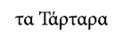
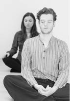
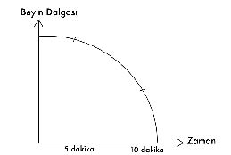

ADIM II: BEYİN DALGALARINI DÜŞÜRME NEFESTEKİ DAVET
Alfa beyin dalgasına geçerek; kendini iyi, mutlu ve tam hissedip algında, duygularında, tepkilerinde ve dolayısıyla yaşadığın deneyimlerde fark yaratabileceğin bir dolu yöntem sıralayabilirim.
Günümüzde en çok kullanılanlar ve sıkça tercih edilen yöntemler; antidepresanlar, uyuşturucu, alkol, cinsellik, yemek, dans, müzik, ibadet...
Ancak bu saydıklarımın hiçbiri, beyin dalgalarını düşürmek konusunda uzun vadeli tam ve kesin sonuçlar vermez.
Dilersen ben sana uzun vadeli iyileşme ve fark yaratmakta bütün dinlerin, kültürlerin, öğretilerin, Doğu’nun, Batı’nın, tıbbın; birlikte hemfikir olduğu en garantili ve güçlü tek “yol”u göstereyim:
Nefes...
Hayal kırıklığına mı uğradın?
Gerçek olamayacak kadar basit değil mi?
Haklısın...
Benden daha komplike, daha zor ve karmaşık, hatta herkesin kolaylıkla yapamayacağı bir şeyler beklediğini biliyorum.
Aslında her karmaşık problemin sadece basit bir çözümü olduğu gibi, alfaya geçmenin de en garantili yöntemi de doğru nefestir...
Nefes, varoluşun insan ruhuna üflemesiyle ona “can” veren güçtür!
Kabala’da Musevi mistisizminde “nefesh”, “ruh” anlamına gelir ve sufi geleneğindeki adı da nefis’tir... İngilizcede nefes demek olan “inspration” ise içeriye ruhlanmak anlamını taşır. Latincede “spiritus” da yine nefes ve ruh demektir.
İyi olabilmek için artık pozitifçilik oynamaktan vazgeçmeli ve yapman gereken doğru şeyleri hayatına dahil etmelisin. Hayatını beta beyin dalgasında beşinci viteste son sürat yaşamaya devam edersen, duvara çarpman an meselesidir. Bu noktadan sonra duvarı suçlamanın kimse için anlamı kalmayacaktır. Şimdi ayağını gazdan çekmeye başlamalı ve beyin dalgalarını düşürerek parasempatik sinir sistemi devreye sokmalısın. Seni güvende ve hayatta tutacak olan bu gaz kesme işleminin adı “nefes” almaktır.
“NEFES” görünen kısmıyla vücuda oksijen tedarik etmekse de, aslında görünmeyen yüzüyle enerji tedariğidir.
Nefes alma organın nedir diye sorsam, sanırım hiç düşünmeden “burun” diye cevap verirsin...
O halde nasıl ki burnunu hamburger yemek için kullanmıyorsan, bundan sonra ağzını da nefes almak için kullanmamalısın.
Burun sadece senin koku almana yarayan küçük bir organ değildir. Havadaki tozu, zararlı partikülleri tutan, soğuk havayı uygun ısıya ulaştırarak içeriye alan ve aynı zamanda nemi de dengeleyen bir mekanizmadır. Ağızdan nefes almak, bedenin ancak acil durumlar söz konusu olduğunda başvurduğu yoldur.
Nefes almak için ağzını değil, burnunu kullanmalısın.
Anlatacağım nefes tekniğiyle kalp atımlarını yavaşlatacak ve beyin dalganı düşürerek alfa beyin dalgasına ulaşacaksın. “Dingin nefes terbiyesi” olmayan hiç kimse, kalıcı mutluluğu ve içeriden gelen güçlü iyileşmeyi tam ve gerçek anlamıyla yaşayamaz.
Hızlı soluyarak ömür geçiren bir insanın mutlu ve sağlıklı olduğuna beni ikna etmen çok zordur, tıpkı dingin nefes alan bir insanın sinirli ve stresli olduğuna beni inandıramayacağın gibi.
Nefes; içeriye çekilmez!
Akciğer etrafındaki kaslar rahatlayıp gevşediğinde, içindeki basınç düşer ve hava atmosferik basınçla akciğere dolar. Dolayısıyla “nefes” aslında pasif bir işlemdir. Onu içeriye çekmez, sadece davet edersin...
İçine aldığın şeyin sadece oksijen olduğunu düşünüyorsan,
“AŞK” içindeki gerçekliğine henüz uyanmamışsın demektir.
Neyzen cansız saza nefes üfleyerek ona can verir,
Tıpkı cansız bedenlerimize üflediği
nefesle can veren varoluş gibi...
Sen O’nun nefesisin işte;
Bak; “O” seninle nasıl nefes alıyor!
Şimdi düşün bakalım;
Nefesini neyle tüketmek istiyorsun;
Öfkeyle mi, aşkla mı?
“SUFİ NEFESİ” NEDİR?
Bu teknikte nefes alıp verirken hedeflenen şey, parasempatik sinir sistemini uyarmaktır.
Sufi nefesi; dik ve rahat bir oturuş sırasında burundan sakince aldığın nefesi yine burundan, daha ağır bir tempoda geri vererek yapılır.
Dört birimde aldığın nefesi, sekiz birimde vererek günde ortalama 10 dakika uygulayacağın sufi nefesiyle, beyin dalganı alfaya çekerek yaşamındaki büyük ve gerçek dönüşümü de başlatmış olacaksın.
Nefes alıp verirken beynini durdurmak çabasında olma. O durduğunda zaten ölmüşsündür! Beyni nefesle durdurmak diye bir şey yoktur.
Hayatımın 18 yılını harcadığım Spiritüel eğitim sürecinde Aborjinlerle birlikte geçirdiğim uzun zamanlarda da, Uzakdoğu’da dağların tepesinde sadece su içip günlerce oruç tutarak yaptığım meditasyonlarda da beynimi durduramadım!
Nefes egzersizinde hedef, beyni durdurmak değil, beyin dalgalarını düşürmek ve vücudu bu mekanizmaya mümkün olduğunca alıştırabilmektir.
SUFİ NEFESİ EGZERSİZİ NASIL YAPILIR?

Kendini iyi ve rahat hissettiğin pozisyonda, dilediğin yerde sufi nefesi yapabilirsin. (Şezlongda ya da yatakta uzanarak, koltukta dik oturarak vb.)
• Günün herhangi bir saatinde kendine ayırdığın on dakikalık zaman dilimi içinde sufi nefesi çalışabilirsin. (Koşarken, araç kullanırken ya da uykusuzlukla baş edemeyecek kadar yorgun halde yatağa yattığında yapmamalısın.)
• Nefes alıp verirken, sakin ve dingin olmaya özen göstermeli ve bu alışveriş sırasında burnundan sert soluk sesleri çıkarmamalısın.
• Gözlerin açık olduğunda beynin saniyede ortalama milyarlarca bit veri almaya devam edeceğinden, gözlerini kapatarak nefes çalışman çok daha uygun olacaktır. (Tekniğin ilerledikçe, gözlerinin açık ya da kapalı olması önemini yitirecektir.)
• Nefes alırken dört, verirken sekiz sayılarını tutturmaya çalışıp hesap yapma. Önemli olan ağır nefes alıp daha ağır bir tempoda onu geri vermendir.
• Bu egzersizi günde 10 dakika yapman çok önemli, çünkü beyin ilk 5 dakikanın ardından nefese reaksiyon vermeye başlayacağından, 10 dakikalık nefes çalışmasının bölünmesine, izin vermemelisin.

Sufi nefesini günlük hayatın içinde ani gelişen olumsuz olayları çözümlemek için başvuracağın acil önlem paketi olarak kullanma. Bu tekniği her gün istikrarla uygulamaya devam ettiğinde zaten yaşanan olumsuzlukların çözümüne kendi içinde sahip olacaksın.
Sufi nefesini geçici günlük egzersizlerin olarak değil, cennetine açılan kapın olarak bütünüyle hayatına al.
Şunu lütfen unutma:
Meditasyon bir yapma değil, olma halidir.
Tekniğin gayet kolay ve herkes tarafından uygulanabilir olduğunu biliyorum. Bu aşamada artık önemli olan nefesi yapıp yapamayacağın değildir. Kalbin atmaya devam ettiği sürece sufi nefesi yapmak için gayet uygunsundur. Artık asıl önemli olan detay günde 10 dakikanı bu nefesi uygulamak için ayırıp ayırmayacağındır.
Öne süreceğin hiçbir mazeret kabulüm değildir. Birlikte çıktığımız bu aşk yolculuğunun inanç meselesi değil, emek işi olduğunu sana bir kez daha hatırlatmak ve ancak emeğin kadar sonuç alabileceğini, çaban kadar mucizeler yaratabileceğini söylemek isterim.
Kendine doğal bir gelişim süreci yarat. Benim Spiritüel gelişim eğitimim henüz 12 yaşlarında başladığı halde bugün 30’lu yaşlarımda da ve biliyorum ki o son güne kadar hep devam edecek. Ben bu gelişim sürecine hayatımı adamama rağmen bugün yine öğrenmeye ve gelişmeye devam eden bir çırağım.
Sahip olduğun bilgiyi kullanmadığın sürece,
ona sahip olmak seni ayrıcalıklı kılmayacaktır.
Zihinsel ve ruhsal gelişiminde, hiç ihtiyaç duymayacağın okul diplomalarını alabilmek için 10 yıl boyunca uğraştığın halde, evrensel zekânı uyandırmak ve onu aktif kullanmayı öğrenmek için kendine günde sadece 10 dakika bile ayıramıyorsan, bu yolculukta birbirimiz için doğru yoldaşlar değiliz.
Dünyanın pek çok ülkesinde en ağır ve en güçlü Spiritüel eğitimleri alıp üstelik hiçbiri üç beş haftalık kurslar olmayan, hatta bazısı sekiz yıl boyunca süren çalışmaların içinden geçtiğim ve her birinin ustası olup diplomalarını aldığım halde, hiçbir hocanın beni yolculuğum içinde ileri taşıyabilecek tek bir adımı dahi attıramadıklarını öğrendim. Artık biliyorum ki:
Hiçbir şeyin ustalığı bana başkaları tarafından verilmeyecektir.
Bu yolculuk benim için tamamen kişisel bir süreçti, tıpkı senin için de olacağı gibi.
Dünyanın en iyi ve büyük ustalarını bulup onların beni bütün yüklerimle tekâmül yolumda sırtlayarak taşımalarını çok istedim ama inan; hiçbiri bugüne kadar tek bir kişiyi dahi tekâmül yolunda sırtlayıp bir adım öteye dahi götüremediler.
Senin yürümek istemediğin bir yolda, hiçbir ustanın senin adına adımlar atması mümkün değil. Varoluşla ticaretinde, üçkâğıt yapamazsın.
Ne kadar emek harcarsan, yolculuğunda ancak o kadar ilerleyebilirsin.
İşte bu yüzden sadece kendin için günde 10 dakika ayırmanı istiyorum senden. 168 saatte sadece 70 dakika yapacağın sufi nefesi, yaşamının yüzde biri kadar bile etmiyor. Sen bu yüzde biri bile gelişimin için ayırmaya hazır değilsen, aynı yolun yolcusu değiliz demektir...
BİLGELİĞİN AŞAMALARI:
Uzakdoğu’da kılıç ustalığının üç aşaması vardır:
Birinci aşamada, usta kılıcıyla düşmanını bertaraf eder. İkinci aşamadaysa düşmanını etrafındaki olanakları kullanıp doğadan yarar sağlayarak alt eder. Üçüncü ve son aşamadaysa usta artık kılıcını kınına koyar çünkü gerçek savaşın dışarıda değil, içeride olduğunu öğrenmiştir.
Üzülerek söylemek zorundayım ki “sufi nefesi” yaparak beyin dalgalarını düşürmeden, bu uğurda istikrar gösterip sonuç almaya başlamadan, diğer aşamalara geçip yeni bir adımlar atman mümkün değil.
Beyin dalgaların düşmediği sürece, Spiritüel boyutta yapacağın her yolculuk senin için sadece bir “sanrı” olacağından, nefes uygulamasını iyi öğrenmen ve kullanman gerekiyor.
Sufizmde; aşk yolculuğuyla ilgili çok güzel bir söz vardır:
“Aşk yolu kumar yoludur.
Bu yolda bütün benliğini ortaya koymalı ve kaybetmeye
hazır olmalısın...”
Bizim yolumuz emek yoludur! Umut, inanç, teselli, dilek ya da hurafe değil...
Artık konuşmayı bırakma ve yapma zamanı!
Başkalarının mucizelerini dinleyip anlatmaya mı devam edeceksin, kendi mucizeni mi yaratacaksın karar ver...
Zihninde hiçbir soru kalmayıncaya dek dinginleş;
işte mutlak cevap odur!
– Yaptığım bütün bu ödevler inşallah geçici sonuçlar vermez Metin!
– Şu an için geçici. Sen devam ettikçe yaptığın her ödev kalıcı olacaktır. Unutma; nokta koymaya devam edersen uzun bir doğru elde edersin. Sonlu noktalar, sonsuz doğruyu oluşturur...
SUFİ NEFESİNİN HAFTALIK GELİŞİMİ:
I. Hafta: Nefesi ilk uygulamaya başladığında hemen bir iyileşme de hissetmen mümkün, hiçbir şey hissetmemen de. Sorun değil... Her ikisi de gelişimin doğal bir parçası. Esnemelerinin artması, uyuma isteğin, hatta duyduğun ağlama arzusu bile gayet normal şeyler. Nefes çalışmaları aynı zamanda bir bilinçaltı terapisi de olduğundan, bilincin yumuşadıkça altından birtakım blokajlar çıkacaktır. Yaşayacağın ağlamalarla aslında bu ruhsal blokajları da çözüyor olacaksın.
Panik atağı olan ya da anksiyetesi yüksek kişilerin, nefes alıp verişi sırasında yoğun kalp çarpıntıları hissetmeleri, herhangi bir sorun yaşadıklarına işaret etmez.
Nefes alıp verirken ölen kimseye rastlamadım henüz.
Bu gibi durumlarda nefes çalışmasına beş dakika kadar ara vermeleri ancak daha sonra tekrar yapmaları gerekir. Çarpıntı gerekçesiyle, bu egzersiz terk edilmemelidir. Anksiyetesi yüksek insanların bedeni yüksek nabız sayısına alışkanlık gösterdiğinden, nefes çalışmasıyla kalp atımlarının yavaşlamasına doğal olarak zihinsel tepkiler verebilirler. Ancak sufi nefesinde istikrarlı olurlarsa bir süre sonra kalplerine şunu kabul ettirmiş olacaklardır: “Sen yüksek hızla atmaya fazlasıyla alıştığın için, yavaşlamanın normal olmadığını düşünüyorsun. Oysa sağlıklı olan ve olması gereken senin yavaş ve huzurlu atmandır...”
II. Hafta: Giderek daha hızlı sakinleşmeye başladığını fark edebilir, yaşanan olumsuzluklar karşısında moralini daha çabuk toparlayabildiğini görebilirsin. Kendindeki değişimi fark etmen daha zor olacağından, bu egzersizle aslında sende hiçbir şeyin değişmediği hissine de kapılabilirsin. Başarısızlık hissinin çok kısa ancak doğal bir süreç olduğunu bilmeli ve buna rağmen sufi nefesi egzersizinden vazgeçmemelisin. “Nefes”in seni istila edip de etkilememesi mümkün değil! Bu egzersiz tartışılabilir bir ruhsal yöntem değildir. Etkisi kesin, bilimsel ve fizyolojik sonuçlar yaratacaktır.
III. Hafta: Üçüncü haftadan sonra yakın çevrendeki insanlar, sendeki olumlu değişimi görmeye başlayacaktır. Daha sakin, daha eğlenceli, daha toleranslı, daha hoşgörülü olmaya başladığınla yüzleşerek sendeki bu olumlu halin tadını çıkarmak isteyeceklerdir.
IV. Hafta: Algın değiştikçe, hislerin ve tepkilerin de değişmeye başladığından, verdiğin olumlu tepkilerin yaşanan olayları nasıl etkilediğini göreceksin. Şimdilik sana mucize gibi gelen oysa her biri senin değişen algı ve hissediş şeklinle ilgili verdiğin reaksiyonlardan kaynaklanan güzel deneyimler tecrübe etmeye başlayacaksın...
İlerleyen haftalar, aylar ve yıllar içinde, bugün olduğun kişinin hayli uzağında, bir masalın kahramanı olarak yaşamını sürdürmekte olduğunu fark edeceksin!
Bütün bu ödevlerin etkisini görebilmek için kafein kullanımından vazgeçmek gerekir. İnan sana bir kahvenin verdiği hazdan çok daha fazlasını vaat ediyorum.
Kafein; sempatik sinir sistemini uyarıp seni hızlandırdığından yaptığın nefes egzersizleri ise parasempatik sinir sistemini uyaracağından nefeslerinin etkisini tam görmek için bana güven ve kafeinden uzak dur. Zaten hayat seni yeterince strese sürüklüyor. Bunun üzerine ayrıca kafeinle kendini strese sokmana hiç gerek yok.
Zihnini yavaşlatmadan kim çekirdek inancını temizleyecekmiş?
Daha varoluşla ile ilgili çekirdek inancın korkuyken...
– Metin senin mesleğin nedir?
– Ben hizmetkârım ruhparçam! Aşka ve bütüne hizmet ederim...